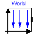
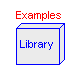
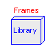
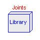
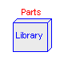
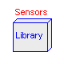
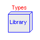
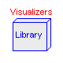
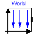
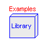
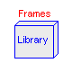
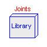
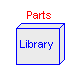
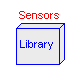
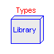
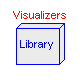
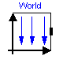
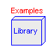
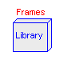
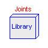
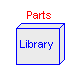
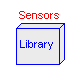
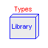
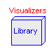
Library MultiBody is a free Modelica package providing 3-dimensional mechanical components to model in a convenient way mechanical systems, such as robots, mechanisms, vehicles. Typical animations generated with this library are shown in the next figure:
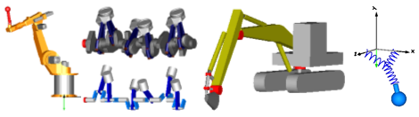
For an introduction, have especially a look at:
The MultiBody library will be included as Modelica.Mechanics.MultiBody in the next version of the Modelica standard library. Note, that the MultiBody library replaces the long used ModelicaAdditions.MultiBody library. In MultiBody.UsersGuide.Upgrade it is described how to upgrade.
Copyright © 2003, Modelica Association and DLR.
This Modelica package is free software; it can be redistributed and/or modified under the terms of the Modelica license, see the license conditions and the accompanying disclaimer in the documentation of package Modelica in file "Modelica/package.mo".
| Name | Description |
|---|---|
| UsersGuide | User's Guide |
| World | World coordinate system + gravity field + default animation definition |
| Examples | Examples for the 3D mechanical systems library |
| Forces | Components that exert forces and/or torques between frames |
| Frames | Functions to transform rotational frame quantities |
| Interfaces | Connectors and partial models for 3D mechanical components |
| Joints | Components that constrain the motion between two frames |
| Parts | Rigid components such as bodies with mass and inertia and massless rods |
| Sensors | Sensors to measure variables |
| Types | Constants and types with choices, especially to build menus |
| Visualizers | 3-dimensional visual objects |
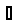
Model World represents a global coordinate system fixed in ground. This model serves several purposes:
Since the gravity field function is required from all bodies with mass and the default settings of animation properties are required from nearly every component, exactly one instance of model World needs to be present in every model on the top level. The basic declaration needs to be:
inner MultiBody.World world
Note, it must be an inner declaration with instance name world in order that this world object can be accessed from all objects in the model. When dragging the "World" object from the package browser into the diagram layer, this declaration is automatically generated (this is defined via annotations in model World).
All vectors and tensors of a mechanical system are resolved in a frame that is local to the corresponding component. Usually, if all relative joint coordinates vanish, the local frames of all components are parallel to each other, as well as to the world frame (this holds as long as a Parts.FixedRotation, component is not used). In this "reference configuration" it is therefore alternatively possible to resolve all vectors in the world frame, since all frames are parallel to each other. This is often very convenient. In order to give some visual support in such a situation, in the icon of a World instance two axes of the world frame are shown and the labels of these axes can be set via parameters.
| Name | Default | Description |
|---|---|---|
| enableAnimation | true | = true, if animation of all components is enabled |
| animateWorld | true | = true, if world coordinate system shall be visualized |
| animateGravity | true | = true, if gravity field shall be visualized (acceleration vector or field center) |
| label1 | "x" | Label of horizontal axis in icon |
| label2 | "y" | Label of vertical axis in icon |
| gravityType | MultiBody.Types.GravityTypes.UniformGravity | Type of gravity field |
| g | 9.81 | Constant gravity acceleration [m/s2] |
| n | {0,-1,0} | Direction of gravity resolved in world frame (gravity = g*n/length(n)) |
| mue | 3.986e14 | Gravity field constant (default = field constant of earth) [m3/s2] |
| axisLength | nominalLength/2 | Length of world axes arrows [m] |
| axisDiameter | axisLength/defaultFrameDiameterFraction | Diameter of world axes arrows [m] |
| axisShowLabels | true | = true, if labels shall be shown |
| axisColor_x | MultiBody.Types.Defaults.FrameColor | Color of x-arrow |
| axisColor_y | axisColor_x | Color of y-arrow |
| axisColor_z | axisColor_x | Color of z-arrow |
| gravityArrowTail[3] | {0,0,0} | Position vector from origin of world frame to arrow tail, resolved in world frame [m] |
| gravityArrowLength | axisLength/2 | Length of gravity arrow [m] |
| gravityArrowDiameter | gravityArrowLength/defaultWidthFraction | Diameter of gravity arrow [m] |
| gravityArrowColor | {0,230,0} | Color of gravity arrow |
| gravitySphereDiameter | 12742000 | Diameter of sphere representing gravity center (default = mean diameter of earth) [m] |
| gravitySphereColor | {0,230,0} | Color of gravity sphere |
| nominalLength | 1 | "Nominal" length of multi-body system [m] |
| defaultAxisLength | nominalLength/5 | Default for length of a frame axis (but not world frame) [m] |
| defaultJointLength | nominalLength/10 | Default for the fixed length of a shape representing a joint [m] |
| defaultJointWidth | nominalLength/20 | Default for the fixed width of a shape representing a joint [m] |
| defaultForceLength | nominalLength/10 | Default for the fixed length of a shape representing a force (e.g. damper) [m] |
| defaultForceWidth | nominalLength/20 | Default for the fixed width of a shape represening a force (e.g. spring, bushing) [m] |
| defaultBodyDiameter | nominalLength/9 | Default for diameter of sphere representing the center of mass of a body [m] |
| defaultWidthFraction | 20 | Default for shape width as a fraction of shape length (e.g., for Parts.FixedTranslation) |
| defaultArrowDiameter | nominalLength/40 | Default for arrow diameter (e.g., of forces, torques, sensors) [m] |
| defaultFrameDiameterFraction | 40 | Default for arrow diameter of a coordinate system as a fraction of axis length |
model World
"World coordinate system + gravity field + default animation definition"
import SI = Modelica.SIunits;
parameter Boolean enableAnimation=true
"= true, if animation of all components is enabled";
parameter Boolean animateWorld=true
"= true, if world coordinate system shall be visualized";
parameter Boolean animateGravity=true
"= true, if gravity field shall be visualized (acceleration vector or field center)";
parameter MultiBody.Types.AxisLabel label1="x" "Label of horizontal axis in icon";
parameter MultiBody.Types.AxisLabel label2="y" "Label of vertical axis in icon";
parameter MultiBody.Types.GravityTypes.Temp gravityType=MultiBody.Types.GravityTypes
.UniformGravity "Type of gravity field";
parameter SI.Acceleration g=9.81
"|gravityType = UniformGravity| Constant gravity acceleration";
parameter MultiBody.Types.Axis n={0,-1,0}
"|gravityType = UniformGravity| Direction of gravity resolved in world frame (gravity = g*n/length(n))";
parameter Real mue(
unit="m3/s2",
min=0) = 3.986e14
"|gravityType = PointGravity| Gravity field constant (default = field constant of earth)";
parameter SI.Distance axisLength=nominalLength/2
"|Animation|if animateWorld = true| Length of world axes arrows";
parameter SI.Distance axisDiameter=axisLength/defaultFrameDiameterFraction
"|Animation|if animateWorld = true| Diameter of world axes arrows";
parameter Boolean axisShowLabels=true
"|Animation|if animateWorld = true| = true, if labels shall be shown";
parameter MultiBody.Types.Color axisColor_x=MultiBody.Types.Defaults.FrameColor
"|Animation|if animateWorld = true| Color of x-arrow";
parameter MultiBody.Types.Color axisColor_y=axisColor_x
"|Animation|if animateWorld = true| Color of y-arrow";
parameter MultiBody.Types.Color axisColor_z=axisColor_x
"|Animation|if animateWorld = true| Color of z-arrow";
parameter SI.Position gravityArrowTail[3]={0,0,0}
"|Animation|if animateGravity = true and gravityType = UniformGravity| Position vector from origin of world frame to arrow tail, resolved in world frame";
parameter SI.Length gravityArrowLength=axisLength/2
"|Animation|if animateGravity = true and gravityType = UniformGravity| Length of gravity arrow";
parameter SI.Diameter gravityArrowDiameter=gravityArrowLength/defaultWidthFraction
"|Animation|if animateGravity = true and gravityType = UniformGravity| Diameter of gravity arrow";
parameter MultiBody.Types.Color gravityArrowColor={0,230,0}
"|Animation|if animateGravity = true and gravityType = UniformGravity| Color of gravity arrow";
parameter SI.Diameter gravitySphereDiameter=12742000
"|Animation|if animateGravity = true and gravityType = PointGravity| Diameter of sphere representing gravity center (default = mean diameter of earth)";
parameter MultiBody.Types.Color gravitySphereColor={0,230,0}
"|Animation|if animateGravity = true and gravityType = PointGravity| Color of gravity sphere";
parameter SI.Length nominalLength=1
"|Defaults|| \"Nominal\" length of multi-body system";
parameter SI.Length defaultAxisLength=nominalLength/5
"|Defaults|| Default for length of a frame axis (but not world frame)";
parameter SI.Length defaultJointLength=nominalLength/10
"|Defaults|| Default for the fixed length of a shape representing a joint";
parameter SI.Length defaultJointWidth=nominalLength/20
"|Defaults|| Default for the fixed width of a shape representing a joint";
parameter SI.Length defaultForceLength=nominalLength/10
"|Defaults|| Default for the fixed length of a shape representing a force (e.g. damper)";
parameter SI.Length defaultForceWidth=nominalLength/20
"|Defaults|| Default for the fixed width of a shape represening a force (e.g. spring, bushing)";
parameter SI.Length defaultBodyDiameter=nominalLength/9
"|Defaults|| Default for diameter of sphere representing the center of mass of a body";
parameter Real defaultWidthFraction=20
"|Defaults|| Default for shape width as a fraction of shape length (e.g., for Parts.FixedTranslation)";
parameter SI.Length defaultArrowDiameter=nominalLength/40
"|Defaults|| Default for arrow diameter (e.g., of forces, torques, sensors)";
parameter Real defaultFrameDiameterFraction=40
"|Defaults|| Default for arrow diameter of a coordinate system as a fraction of axis length";
MultiBody.Interfaces.Frame_b frame_b;
/* The World object can only use the MultiBody.Visualizers.Advanced.Shape model, but no
other models in package MultiBody.Visualizers, since the other models access
data of the "outer MultiBody.World world" object, i.e., there are
mutually dependent classes. For this reason, the higher level visualization
objects cannot be used.
*/
protected
parameter Integer ndim=if enableAnimation and animateWorld then 1 else 0;
parameter Integer ndim2=if enableAnimation and animateWorld and
axisShowLabels then 1 else 0;
// Parameters to define axes
parameter SI.Length headLength=min(axisLength, axisDiameter*Types.Defaults.
FrameHeadLengthFraction);
parameter SI.Length headWidth=axisDiameter*Types.Defaults.FrameHeadWidthFraction;
parameter SI.Length lineLength=max(0, axisLength - headLength);
parameter SI.Length lineWidth=axisDiameter;
// Parameters to define axes labels
parameter SI.Length scaledLabel=Types.Defaults.FrameLabelHeightFraction*axisDiameter;
parameter SI.Length labelStart=1.05*axisLength;
// x-axis
MultiBody.Visualizers.Advanced.Shape x_arrowLine[ndim](
each shapeType="cylinder",
each length=lineLength,
each width=lineWidth,
each height=lineWidth,
each lengthDirection={1,0,0},
each widthDirection={0,1,0},
each color=axisColor_x,
each specularCoefficient=0);
MultiBody.Visualizers.Advanced.Shape x_arrowHead[ndim](
each shapeType="cone",
each length=headLength,
each width=headWidth,
each height=headWidth,
each lengthDirection={1,0,0},
each widthDirection={0,1,0},
each color=axisColor_x,
each r={lineLength,0,0},
each specularCoefficient=0);
MultiBody.Visualizers.Internal.Lines x_label[ndim2](
each lines=scaledLabel*{[0, 0; 1, 1],[0, 1; 1, 0]},
each diameter=axisDiameter,
each color=axisColor_x,
each r_lines={labelStart,0,0},
each n_x={1,0,0},
each n_y={0,1,0},
each specularCoefficient=0);
// y-axis
MultiBody.Visualizers.Advanced.Shape y_arrowLine[ndim](
each shapeType="cylinder",
each length=lineLength,
each width=lineWidth,
each height=lineWidth,
each lengthDirection={0,1,0},
each widthDirection={1,0,0},
each color=axisColor_y,
each specularCoefficient=0);
MultiBody.Visualizers.Advanced.Shape y_arrowHead[ndim](
each shapeType="cone",
each length=headLength,
each width=headWidth,
each height=headWidth,
each lengthDirection={0,1,0},
each widthDirection={1,0,0},
each color=axisColor_y,
each r={0,lineLength,0},
each specularCoefficient=0);
MultiBody.Visualizers.Internal.Lines y_label[ndim2](
each lines=scaledLabel*{[0, 0; 1, 1.5],[0, 1.5; 0.5, 0.75]},
each diameter=axisDiameter,
each color=axisColor_y,
each r_lines={0,labelStart,0},
each n_x={0,1,0},
each n_y={-1,0,0},
each specularCoefficient=0);
// z-axis
MultiBody.Visualizers.Advanced.Shape z_arrowLine[ndim](
each shapeType="cylinder",
each length=lineLength,
each width=lineWidth,
each height=lineWidth,
each lengthDirection={0,0,1},
each widthDirection={0,1,0},
each color=axisColor_z,
each specularCoefficient=0);
MultiBody.Visualizers.Advanced.Shape z_arrowHead[ndim](
each shapeType="cone",
each length=headLength,
each width=headWidth,
each height=headWidth,
each lengthDirection={0,0,1},
each widthDirection={0,1,0},
each color=axisColor_z,
each r={0,0,lineLength},
each specularCoefficient=0);
MultiBody.Visualizers.Internal.Lines z_label[ndim2](
each lines=scaledLabel*{[0, 0; 1, 0],[0, 1; 1, 1],[0, 1; 1, 0]},
each diameter=axisDiameter,
each color=axisColor_z,
each r_lines={0,0,labelStart},
each n_x={0,0,1},
each n_y={0,1,0},
each specularCoefficient=0);
// Uniform gravity visualization
parameter Integer ndim_uniformGravity=if enableAnimation and animateGravity
and gravityType == 1 then 1 else 0;
parameter SI.Length gravityHeadLength=min(gravityArrowLength, gravityArrowDiameter*
Types.Defaults.ArrowHeadLengthFraction);
parameter SI.Length gravityHeadWidth=gravityArrowDiameter*Types.Defaults.
ArrowHeadWidthFraction;
parameter SI.Length gravityLineLength=max(0, gravityArrowLength - gravityHeadLength);
MultiBody.Visualizers.Advanced.Shape gravityArrowLine[ndim_uniformGravity]
(
each shapeType="cylinder",
each length=gravityLineLength,
each width=gravityArrowDiameter,
each height=gravityArrowDiameter,
each lengthDirection=n,
each widthDirection={0,1,0},
each color=gravityArrowColor,
each r_shape=gravityArrowTail,
each specularCoefficient=0);
MultiBody.Visualizers.Advanced.Shape gravityArrowHead[ndim_uniformGravity]
(
each shapeType="cone",
each length=gravityHeadLength,
each width=gravityHeadWidth,
each height=gravityHeadWidth,
each lengthDirection=n,
each widthDirection={0,1,0},
each color=gravityArrowColor,
each r_shape=gravityArrowTail + Frames.normalize(n)*gravityLineLength,
each specularCoefficient=0);
// Point gravity visualization
parameter Integer ndim_pointGravity=if enableAnimation and animateGravity
and gravityType == 2 then 1 else 0;
MultiBody.Visualizers.Advanced.Shape gravitySphere[ndim_pointGravity](
each shapeType="sphere",
each r_shape={-gravitySphereDiameter/2,0,0},
each lengthDirection={1,0,0},
each length=gravitySphereDiameter,
each width=gravitySphereDiameter,
each height=gravitySphereDiameter,
each color=gravitySphereColor,
each specularCoefficient=0);
function gravityAcceleration = gravityAccelerationTypes (
gravityType=gravityType,
g=g*MultiBody.Frames.normalize(n),
mue=mue);
protected
function gravityAccelerationTypes
"Gravity field acceleration depending on field type and position"
extends Modelica.Icons.Function;
input SI.Position r[3]
"Position vector from world frame to actual point, resolved in world frame";
input Integer gravityType "Type of gravity field";
input SI.Acceleration g[3]
"Constant gravity acceleration, resolved in world frame, if gravityType=1";
input Real mue(unit="m3/s2")
"Field constant of point gravity field, if gravityType=2";
output SI.Acceleration gravity[3]
"Gravity acceleration at point r, resolved in world frame";
algorithm
gravity := if gravityType == 1 then g else if gravityType == 2 then -(mue/(
r*r))*(r/Frames.length(r)) else zeros(3);
end gravityAccelerationTypes;
equation
defineRoot(frame_b.R);
assert(Frames.length(n) > 1.e-10,
"Parameter n of World object is wrong (lenght(n) > 0 required)");
frame_b.r_0 = zeros(3);
frame_b.R = Frames.nullRotation();
end World;
function gravityAccelerationTypes
"Gravity field acceleration depending on field type and position"
extends Modelica.Icons.Function;
input SI.Position r[3]
"Position vector from world frame to actual point, resolved in world frame";
input Integer gravityType "Type of gravity field";
input SI.Acceleration g[3]
"Constant gravity acceleration, resolved in world frame, if gravityType=1";
input Real mue(unit="m3/s2")
"Field constant of point gravity field, if gravityType=2";
output SI.Acceleration gravity[3]
"Gravity acceleration at point r, resolved in world frame";
algorithm
gravity := if gravityType == 1 then g else if gravityType == 2 then -(mue/(r*
r))*(r/Frames.length(r)) else zeros(3);
end gravityAccelerationTypes;